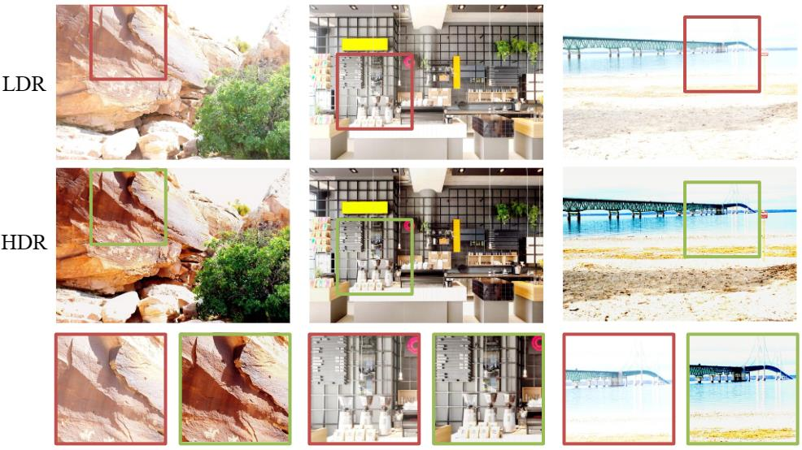
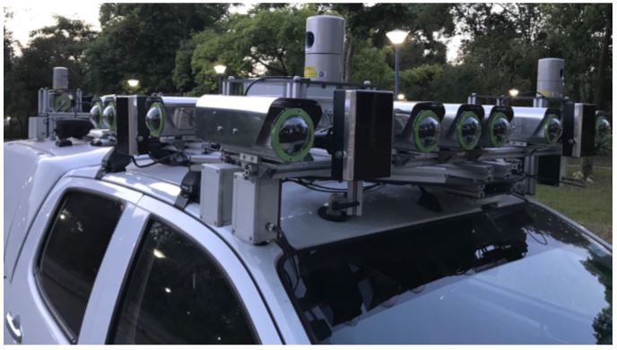

Hi! I am Sixing Hu. I am currently a director of the department of R&D for Digital Media and the department of R&D for imaging at SmartMore. Before that, I obtained my Ph.D. in Department of Computer Science, National University of Singapore, supervised by Prof. Lee Gim Hee. I obtained my Bachelor's degree in Department of Computer Science and Technology, Tsinghua University in 2015.
My working and research interests are about low-level vision, image-based localisation and deep learning.
|  |
High Dynamic Range Image Reconstruction via Deep Explicit Polynomial Curve Estimation
Jiaqi Tang, Xiaogang Xu, Sixing Hu and Yingcong Chen |
| |
Image-Based Geo-Localization Using Satellite Imagery
Sixing Hu and Gim Hee Lee |
|  |
Project AutoVision: Localization and 3D Scene Perception for an Autonomous Vehicle with a Multi-Camera System
Lionel Heng, Benjamin Choi, Zhaopeng Cui, Marcel Geppert, Sixing Hu, Benson Kuan, Peidong Liu, Rang M. H. Nguyen, Ye Chuan Yeo, Andreas Geiger, Gim Hee Lee, Marc Pollefeys and Torsten Sattler |
| |
2D3D-MatchNet: Learning to Matching Keypoints Across 2D Image and 3D Point Cloud
Mengdan Feng, Sixing Hu, Marcelo Ang and Gim Hee Lee |
| |
CVM-Net: Cross-View Matching Network for Image-Based Ground-to-Aerial Geo-Localization
Sixing Hu, Mengdan Feng, Rang M. H. Nguyen and Gim Hee Lee |
| |
Towards Precise Vehicle-Free Point Cloud Mapping: An On-Vehicle System with Deep Vehicle Detection and Tracking
Mengdan Feng, Sixing Hu, Gim Hee Lee and Marcelo Ang |
| |
Expanding Color Query Results via Image Recoloring
Sixing Hu, Pierre-Yves Laffont, Brian Price, Scott Cohen and Michael Brown |
2017/18 Semester 1: CS5340 Uncertainty Modelling in AI, NUS
2017/18 Semester 1: CS4243 Computer Vision and Pattern Recognition, NUS
2016/17 Semester 2: CS3242 3D Modeling and Animation, NUS
2015/16 Semester 2: CS2010 Data Structures and Algorithms II, NUS